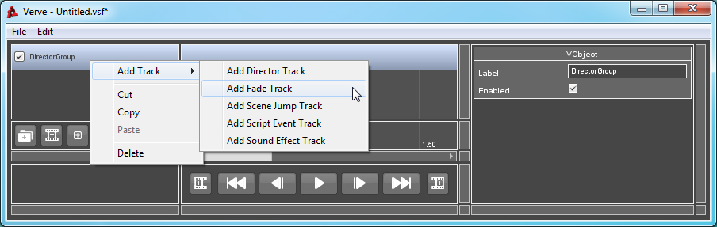
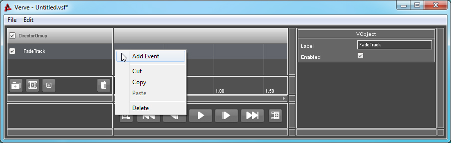
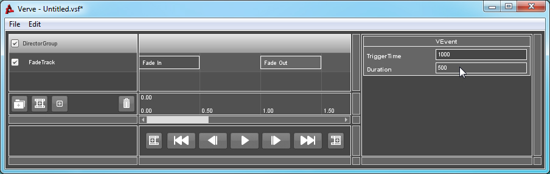

Tutorial : GUI Fade
Objects: VFadeTrack, VFadeEvent, VFadeControl
In order for this Track or Event to work the object named "VFadeControlGui" must exist and be awake. Verve ships with a GUI which handles the creation of this object in the file: Cinematic.gui.
The screen will begin to fade in or out once a Fade Event is triggered. The type of fade is determined by the index of the Event: ODD ordered Events (first, third, fifth...) will fade from black, while EVEN ordered Events (second, fourth, sixth...) will fade to black.
How to Use:
To use fade events, you must first add a VFadeTrack to your sequence's Director Group. If you are unsure of how to create or validate a Group, click here.
Right-Click on the Group, go to "Add Track" and select "Add Fade Track".

Right-Click on the Track and select "Add Event".

Select the newly created Event. The Property List window will refresh and inspect the Event.
